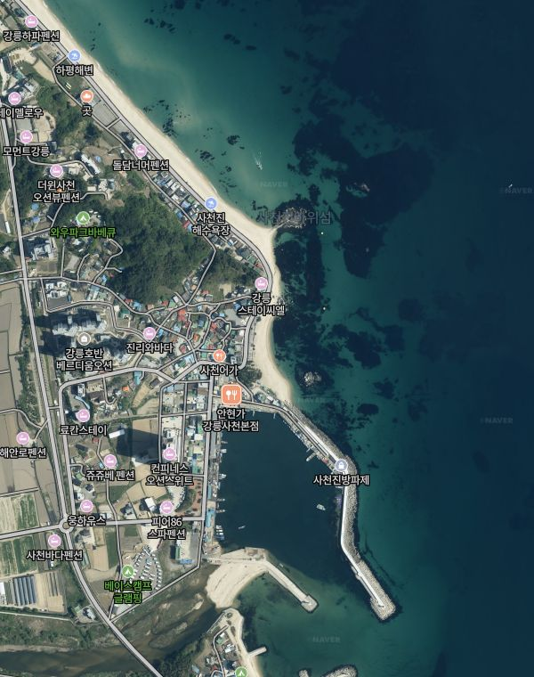

전체
원투
루어
감성돔
5
3
2
1
1
지금 여기 찍기
사천진해변 등대 앞
5번 갔어요 · 동그라미 크기 = 간 횟수, 색 = 가장 많았던 결과
3
잡음
1
입질만
1
꽝
10/19
원투 · 개불 · 밤 1물
감성돔 41
파도 1.8m — 해 지고 한 마리
10/13
원투 · 개불 · 10물
감성돔 35
파도 0.7m
10/03
원투 · 조금
꽝
잔잔, 복어만
이 자리에 오늘 기록 남기기
지도는 움직이고 키울 수 있는 위성 지도로 만들 예정 (시안은 사진으로 대신)